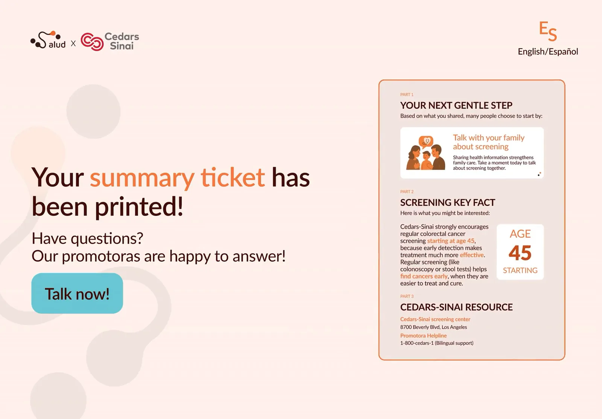
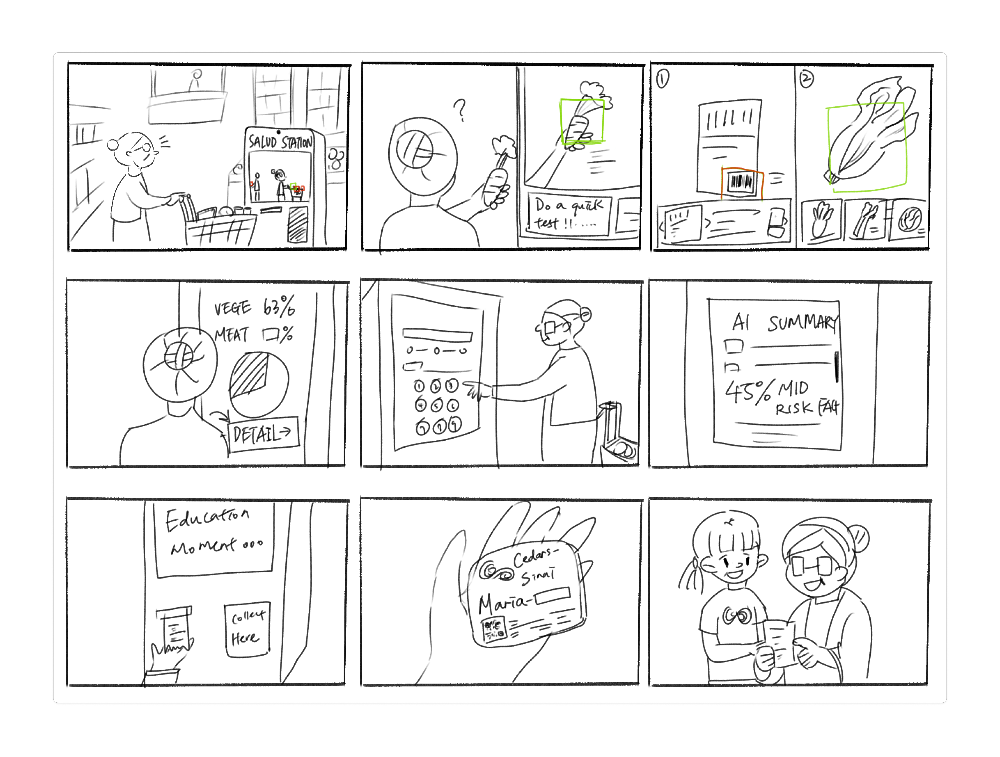

Salud
From Risk Assessment to Trusted Next Steps

Salud is a colorectal cancer (CRC) screening service concept designed with Cedars-Sinai for Latinx adults aged 45–80 in Antelope Valley. It explores how an AI-supported kiosk can extend Cedars-Sinai’s outreach to underserved communities, with community health workers remaining central to personal guidance.
I owned the kiosk’s end-to-end interaction and visual design, from every screen and per-question feedback to privacy interactions, AI boundaries, and the physical enclosure. The research and the ten survey questions were developed collaboratively by the team.
- Role
- Interaction & Service Designer
- Team
- Balinda Bai
Sabrina Chen
Max Wang - Timeline
- Sep - Dec, 2025
- Partner
- Cedars-Sinai
Context
To understand what keeps people from screening, we combined secondary research with conversations with Cedars-Sinai’s community health workers (CHWs), who help residents access health information and care. Cost, healthcare distrust, and the belief that screening is unnecessary without symptoms can limit screening participation.
CHWs bridge this gap through shared language, cultural understanding, and trusted relationships. Meaningful engagement depended on human trust, not information alone, so our challenge became how AI could help carry some of that trust into everyday life.
Pivot
Our early concepts used grocery purchases or self-reported dietary habits to estimate CRC risk.

Early storyboard, abandoned concept. The kiosk scans groceries and returns a risk percentage.
Voluntary input gave users more control over what they shared. But in a public setting, personalized risk scoring could expose sensitive information, create a sense of judgment, and position AI as a medical authority. The problem was not only how the data was collected. It was the assumption that this system should draw cancer-risk conclusions about a person at all.
We deliberately limited AI’s role: it would support informed next steps, not evaluate personal cancer risk.
“I also believe AI should support—not replace—human health professionals.”
58% of Cedars-Sinai survey respondents worried AI might replace human interaction in outreach.
Quote: anonymous respondent · Cedars-Sinai community feedback survey, May 2025 · n=20
Final Service
We looked for a familiar, nonclinical touchpoint within Cedars-Sinai’s existing Antelope Valley outreach area. We proposed a Ralphs grocery store because residents might already visit it regularly, allowing screening information and CHW support to become part of an everyday routine. Its public setting also shaped our boundaries: no personal risk scoring, no exposed health information, and no data retention without opt-in.
Outcome and Next Validation
Delivered: an end-to-end clickable kiosk prototype with simulated printing, a physical enclosure, a summary ticket, and a souvenir system. In final stakeholder feedback, Cedars-Sinai responded positively to the CHW integration, grocery-store setting, and printed takeaway. The concept was designed for a Ralphs setting; it was not deployed or tested with residents.
Next, I would evaluate whether the grocery-store environment allows people to participate comfortably and validate the experience directly with residents. I would also prototype the printing workflow, localize the experience in Spanish, and define the AI and data-retention rules with clinical and privacy stakeholders. The name field would move to the opt-in screen, so identity enters the system only when someone requests follow-up.
Reflection
This project challenged my assumption that a more capable AI would automatically create a stronger product. In sensitive contexts, more capability can create distance rather than value when a system takes on more authority than people can reasonably trust it to hold. Designing responsible AI is not only about expanding what it can do. It is also about deciding what it should not do.